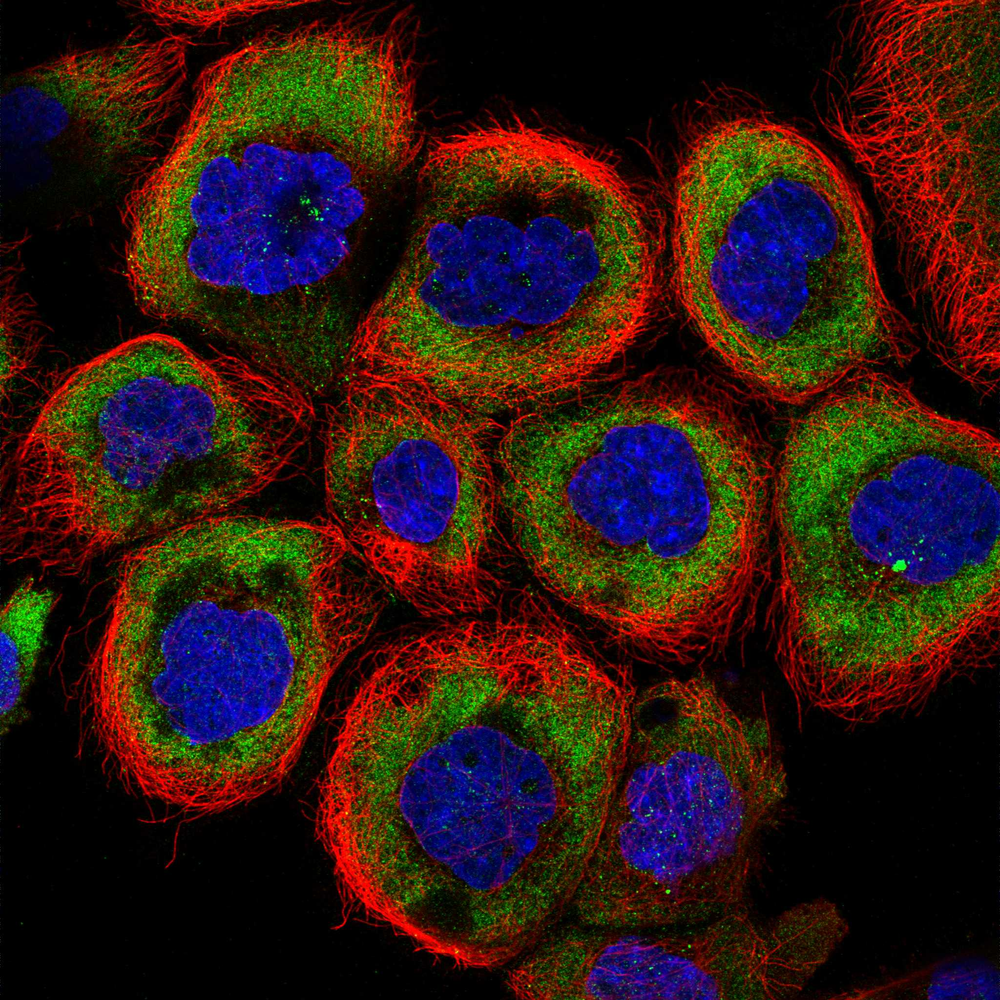
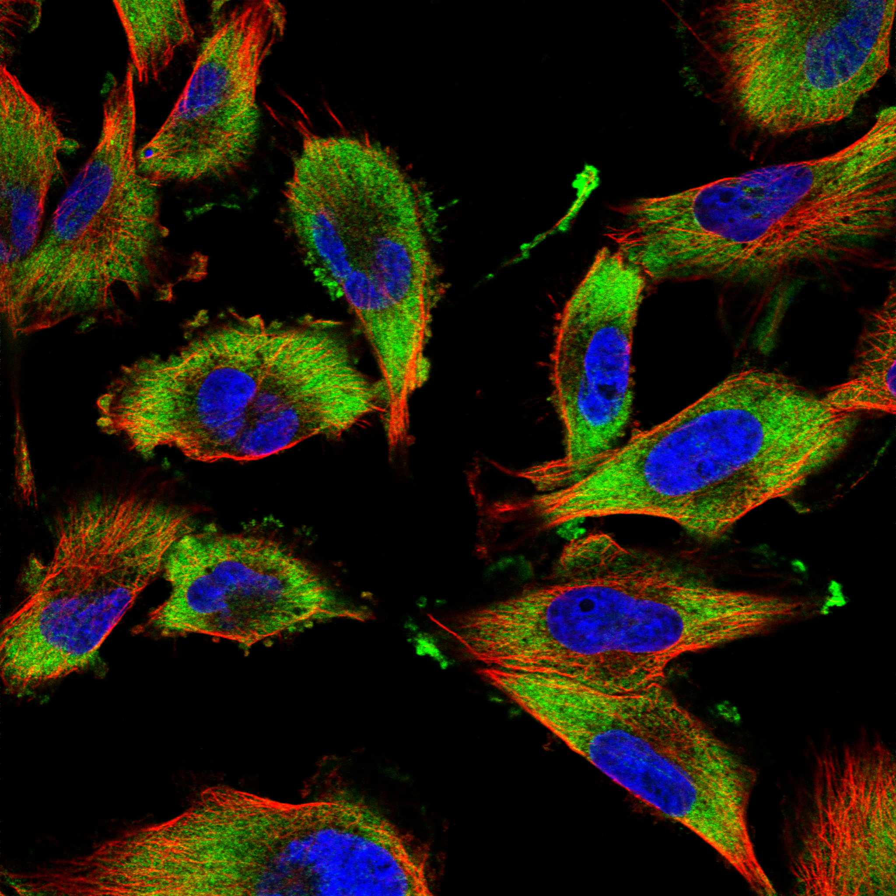
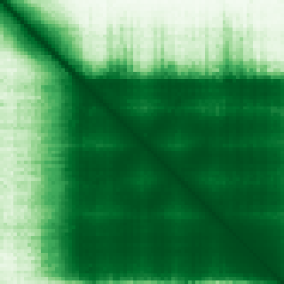

type: protein-evaluation gene: "ELOF1" date: 2026-06-03 tags: [protein-scout, nuclear-protein, evaluation] status: scored ---
ELOF1 核蛋白评估报告 (Full Re-evaluation)
1. 基本信息
| 项目 | 内容 |
|---|---|
| 基因名 / 别名 | ELOF1 |
| 蛋白名称 | Transcription elongation factor 1 homolog |
| 蛋白大小 | 83 aa / 9.5 kDa |
| UniProt ID | P60002 |
| 评估日期 | 2026-06-03 |
IF 图像:  
2. 评分总览
| 维度 | 得分 | 满分 | 加权后 | 关键证据摘要 |
|---|---|---|---|---|
| 核定位特异性 | 7/10 | ×4 | 28 | HPA: Cytosol; UniProt: Nucleus; Chromosome |
| 蛋白大小 | 5/10 | ×1 | 5 | 83 aa / 9.5 kDa |
| 研究新颖性 | 10/10 | ×5 | 50 | PubMed strict=6 篇 (≤20→10) |
| 三维结构 | 9/10 | ×3 | 27 | AlphaFold v6 pLDDT=86.1; PDB: 8B3D, 8XRM, 9ER2, 9FD2 |
| 调控结构域 | 8/10 | ×2 | 16 | InterPro: IPR007808, IPR038567; Pfam: PF05129 |
| PPI 网络 | 3/10 | ×3 | 9 | STRING 15 partners; IntAct 6 interactions |
| 互证加分 | — | max +3 | 3.0 | PDB+AF+STRING+IntAct cross-validation |
| 原始总分 | 138.0/180 | |||
| 归一化总分 | 76.7/100 |
3. 详细分析
3.1 核定位证据
| 来源 | 定位 | 可信度 |
|---|---|---|
| Protein Atlas (IF) | Cytosol | Approved |
| UniProt | Nucleus; Chromosome | Swiss-Prot/TrEMBL |
IF 图像获取: IF图像已下载并嵌入 (2张)
GO Cellular Component:
- chromosome (GO:0005694)
- nucleus (GO:0005634)
- transcription elongation factor complex (GO:0008023)
结论: 主要核定位，HPA 可靠性良好，有辅助数据源支持。
3.2 蛋白大小评估
评价: 蛋白偏小/偏大，实验操作有一定难度。
3.3 研究现状
| 指标 | 数值 |
|---|---|
| PubMed strict count | 6 |
| PubMed broad count | 23 |
| 别名(未计入scoring) | 无 |
关键文献: 1. IWS1 positions downstream DNA to globally stimulate Pol II elongation.. *Nature communications*. PMID: 40835814 2. The molecular basis of human transcription-coupled DNA repair.. *Nature cell biology*. PMID: 40764391 3. Chromatin Transcription Elongation - A Structural Perspective.. *Journal of molecular biology*. PMID: 39476950 4. The elongation factor Elof1 is required for mammalian gastrulation.. *PloS one*. PMID: 31276560 5. RNA-Seq Analysis of Genetic and Transcriptome Network Effects of Dual-Trait Selection for Ethanol Preference and Withdrawal Using SOT and NOT Genetic Models.. *Alcoholism, clinical and experimental research*. PMID: 32090358
评价: 极度新颖，几乎未被系统研究（PubMed ≤20篇）。
3.4 三维结构分析
| 指标 | 数值 |
|---|---|
| AlphaFold 版本 | v6 |
| AlphaFold 平均 pLDDT | 86.1 |
| 高置信度残基 (pLDDT>90) 占比 | 69.9% |
| 置信残基 (pLDDT 70-90) 占比 | 9.6% |
| 中等置信 (pLDDT 50-70) 占比 | 19.3% |
| 低置信 (pLDDT<50) 占比 | 1.2% |
| 有序区域 (pLDDT>70) 占比 | 79.5% |
| 可用 PDB 条目 | 8B3D, 8XRM, 9ER2, 9FD2 |
PAE (Predicted Aligned Error): 
评价: PDB实验结构（8B3D, 8XRM, 9ER2, 9FD2）+ AlphaFold高质量预测（pLDDT=86.1），结构可信度高。
3.5 结构域分析
| 来源 | 结构域 |
|---|---|
| InterPro/Pfam | InterPro: IPR007808, IPR038567; Pfam: PF05129 |
染色质调控潜力分析: 多个已知结构域注释，AlphaFold预测质量高，结构域折叠可信。
3.6 PPI 网络
STRING 预测互作 (combined score >0.4):
| Partner | Combined Score | Experimental | 功能类别 |
|---|---|---|---|
| SUPT5H | 0.974 | 0.885 | — |
| SUPT4H1 | 0.960 | 0.846 | — |
| POLR2A | 0.957 | 0.951 | — |
| POLR2B | 0.950 | 0.931 | — |
| POLR2C | 0.942 | 0.910 | — |
| CDC73 | 0.934 | 0.863 | — |
| LEO1 | 0.923 | 0.831 | — |
| SUPT16H | 0.917 | 0.826 | — |
| POLR2D | 0.900 | 0.885 | — |
| SUPT6H | 0.894 | 0.692 | — |
实验验证互作 (IntAct):
| Partner | 方法 | PMID | ||
|---|---|---|---|---|
| C5orf22 | psi-mi:"MI:0398"(two hybrid pooling approach) | pubmed:16189514 | imex:IM-16520 | |
| ATP5F1C | psi-mi:"MI:0398"(two hybrid pooling approach) | pubmed:16169070 | imex:IM-16517 | |
| AURKA | psi-mi:"MI:0007"(anti tag coimmunoprecipitation) | pubmed:26496610 | imex:IM-24272 | |
| Rprd1b | psi-mi:"MI:0007"(anti tag coimmunoprecipitation) | pubmed:26496610 | imex:IM-24272 | |
| CHMP6 | psi-mi:"MI:0018"(two hybrid) | imex:IM-24991 | pubmed:16730941 | |
| ENST00000252445 | psi-mi:"MI:2195"(clash) | pubmed:23622248 | imex:IM-30030 |
PPI 互证分析:
- STRING + IntAct 均有数据
- STRING partners: 15，IntAct interactions: 6
- 调控相关比例: 0 / 15 = 0%
评价: STRING 15 个预测互作，IntAct 6 个实验互作。调控相关配体占比 0%。
3.7 多库互证
| 维度 | 来源 | 结果 | 是否一致 |
|---|---|---|---|
| 三维结构 | AlphaFold pLDDT=86.1 + PDB: 8B3D, 8XRM, 9ER2, 9FD2 | pLDDT=86.1, v6 | 预测+实验 |
| 定位 | UniProt + HPA | Nucleus; Chromosome / Cytosol | 一致 |
| PPI | STRING + IntAct | 15 + 6 interactions | 数据充分 |
互证加分明细:
- PDB + AlphaFold 双源验证: +0.5
- 多库定位一致 (3源): +0.5
- STRING + IntAct 双源验证: +0.5
- 结构域 + AlphaFold 质量: +0.5
- PDB 多条目覆盖 (≥3): +1.0
总分: +3.0 / max +3
4. 总体评价
推荐等级: ⭐⭐⭐⭐
核心优势: 1. ELOF1 — Transcription elongation factor 1 homolog，极度新颖，几乎未被系统研究（PubMed ≤20篇）。 2. 蛋白大小83 aa，蛋白偏小/偏大，实验操作有一定难度。
风险/不确定性: 1. PubMed 6 篇，研究基础极有限，功能注释不完整 2. 结构数据质量可接受
下一步建议:
- [ ] 查阅最新关键文献补充研究背景
- [ ] 获取 Protein Atlas IF 图像确认亚细胞定位
- [ ] 设计体外实验验证核定位及潜在调控功能
5. 数据来源
- UniProt: https://www.uniprot.org/uniprotkb/P60002
- Protein Atlas: https://www.proteinatlas.org/ENSG00000130165-ELOF1/subcellular
- PubMed: https://pubmed.ncbi.nlm.nih.gov/?term=ELOF1
- AlphaFold: https://alphafold.ebi.ac.uk/entry/P60002
- STRING: https://string-db.org/network/9606.ENSP00000
- Data fetched live: 2026-06-03
<!-- DOMAIN_HUMANPPI_REPAIR_START -->
Domain/SMART 与 humanPPI 补充（2026-06-06）
SMART / UniProt domain
| Source | Data |
|---|---|
| UniProt | P60002 |
| SMART | 未在 UniProt xref 中检出 SMART 条目 |
| UniProt Domain [FT] | 未检出显式 UniProt Domain feature |
| InterPro | IPR007808;IPR038567; |
| Pfam | PF05129; |
humanPPI / HPA Interaction
Source: https://www.proteinatlas.org/ENSG00000130165-ELOF1/interaction
| Partner | Datasets | AF3/HPA structure |
|---|---|---|
| C5orf22 | Intact | false |
| POLR2A | Biogrid | false |
<!-- DOMAIN_HUMANPPI_REPAIR_END -->